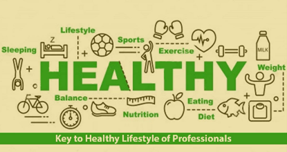
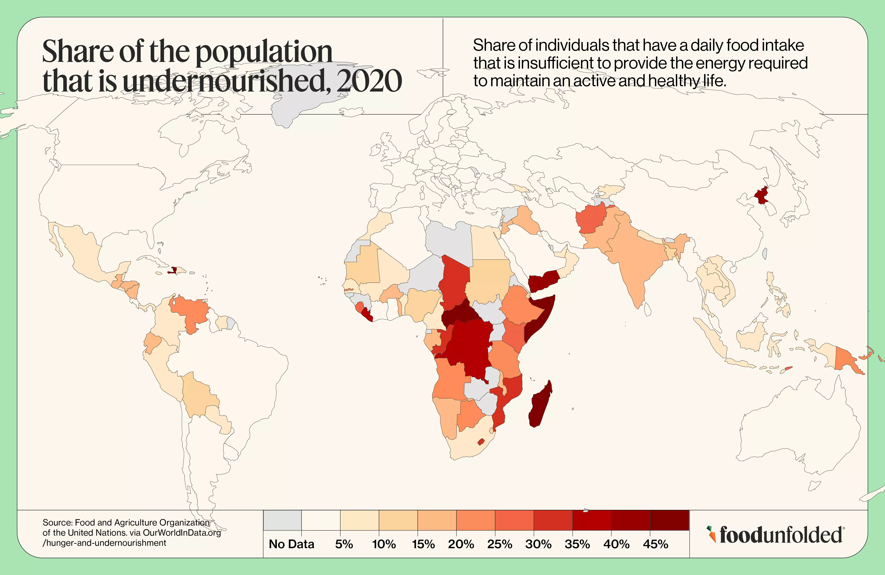

Gallery Page for Nutrition
1 / 3

Welcome to our gallery where healthy living comes to life! Browse through inspiring moments of young people making it positive choices- whether its preparing nutrition's meals, staying active and fun workouts or finding time to relax a recharge. These snapshots showcase the journey towards a balanced and healthier lifestyle. Let these images motivate you to take small steps towards better well being. Every choice counts, and you journey starts today. This image highlights the key to a healthy lifestyle for professionals. The word “HEALTHY” is at the centre, surrounded by icons and keywords related to wellness. It emphasizes sleep, exercise, sports, and weight management, represented by symbols like a bed, running figure, and weighing scale. Diet and nutrition are shown through icons of an apple, fish, and milk, promoting healthy eating habits. Balance and time management are also depicted, suggesting that a well-structured routine is essential. The phrase “Key to Healthy Lifestyle of Professionals” reinforces the message that professionals should prioritize their health through proper habits.
2 / 3

The image is a world map showing the share of the population that was undernourished in 2020, based on data from the Food and Agriculture Organization (FAO). The map uses a color gradient to indicate the percentage of undernourished individuals in each country, with darker shades of red representing higher levels of undernourishment (above 40%) and lighter shades indicating lower percentages (around 5%). It highlights severe food insecurity in parts of Africa, South Asia, and Latin America, while many developed regions such as North America and Europe either have low levels of undernourishment or lack available data. The map underscores global disparities in food security and nutrition
3 / 3
“Be stronger than your excuses” is a motivational phrase that encourages individuals to overcome the barriers and justifications they often create for not pursuing their goals. It reminds us that we can choose discipline and perseverance over the comfort of excuses. Essentially, it’s a call to action to prioritize personal strength and determination, rather than letting reasons or rationalizations hold us back.